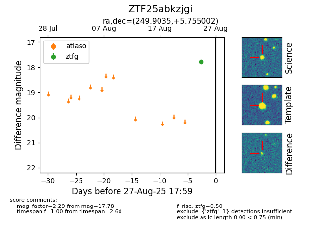

FINK: ZTF25abkzjgi
Lasair: ZTF25abkzjgi
ALeRCE: ZTF25abkzjgi
ZTF25abkzjgi (ztf,fink)
equatorial (ra, dec) = (249.9035,+5.75500)
galactic (l, b) = (22.2445,+31.83214)

last ztfg=17.78
1 ztfg detections